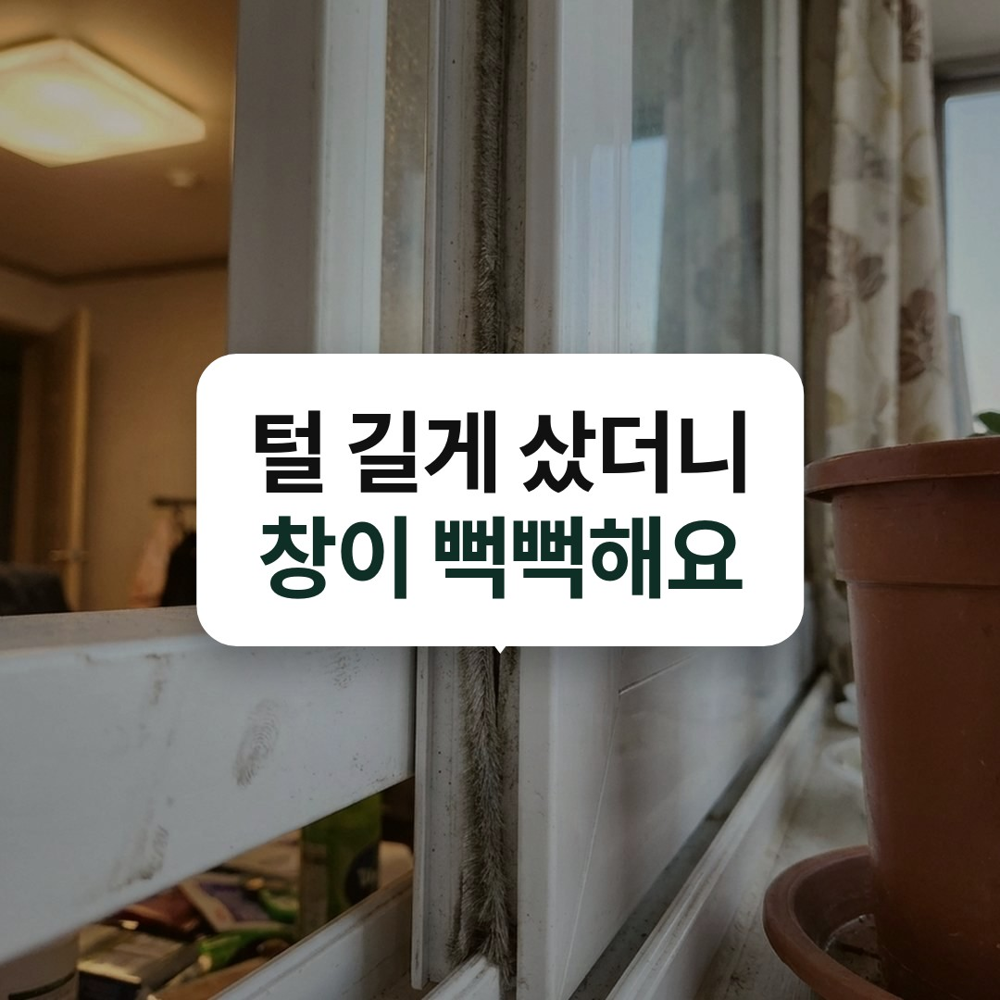
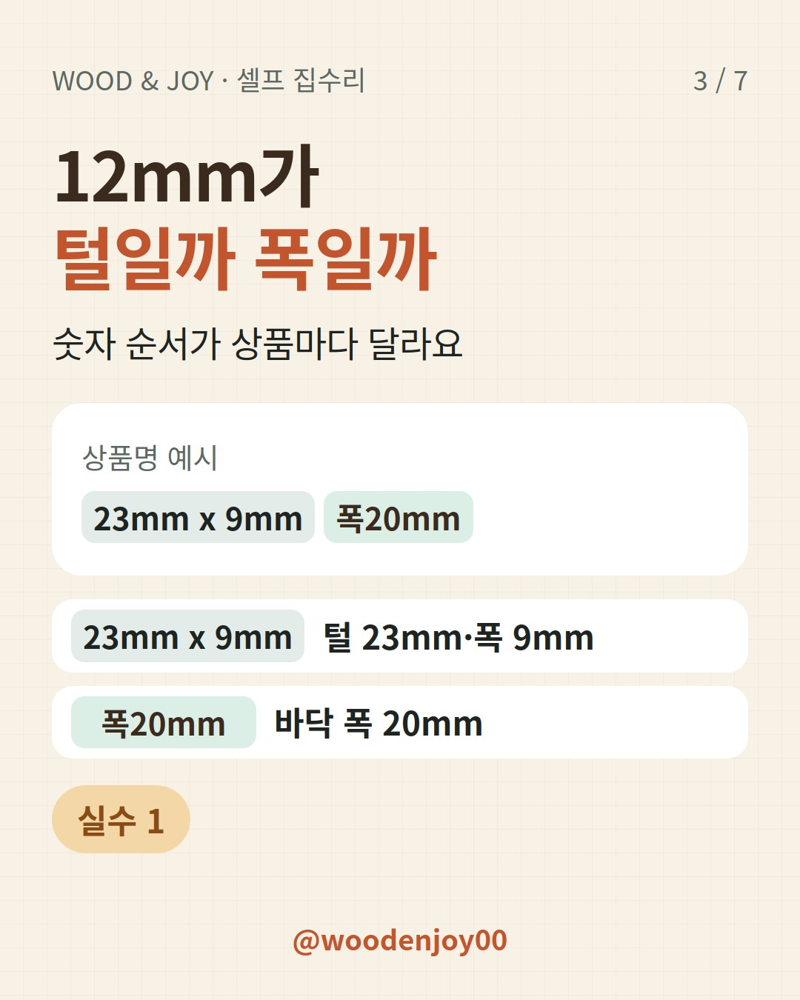
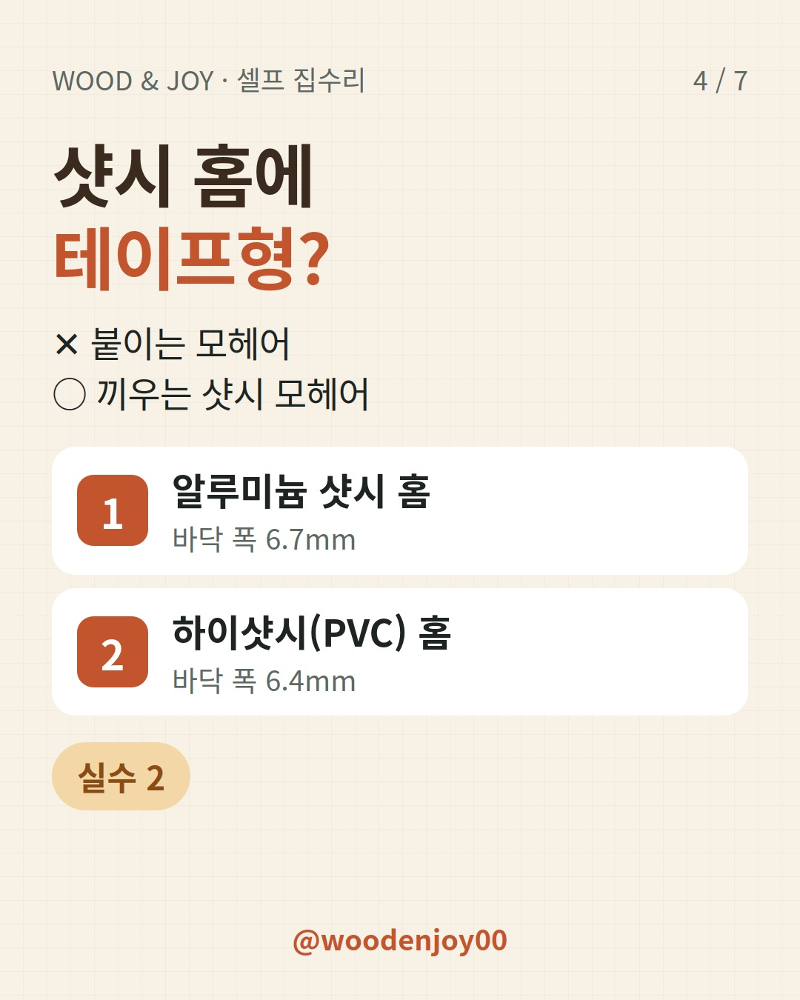

이 포스팅은 쿠팡 파트너스 활동의 일환으로, 이에 따른 일정액의 수수료를 제공받습니다.
모헤어 문풍지를 붙였더니 창문이 뻑뻑하게 밀린다면 털이 틈보다 길 가능성이 커요.
한 줄 결론: 사기 전에 틈 크기, 털 길이(모길이), 바닥 폭 세 숫자만 맞추세요. 샷시 홈이면 테이프형 말고 끼우는 샷시 모헤어예요.

판매처마다 달라요. 규격은 털 길이와 바닥 폭 두 숫자인데 순서가 정해져 있지 않아요.
상세 스펙의 모길이(털 높이) 칸과 폭 칸을 따로 보세요.

털은 창틀에 가볍게 닿는 높이면 충분해요. 틈보다 두꺼우면 창이 안 닫히거나 롤러·잠금장치에 무리가 갈 수 있어요. 1~2mm 차이로도 창 움직임이 달라져요.
| 선택지 | 이런 자리 | 주의할 점 | 가격 예 |
|---|---|---|---|
| 끼우는 샷시 모헤어(비접착) | 창짝 홈 | 바닥 폭 알루미늄 6.7mm, 하이샷시 6.4mm. 털은 샷시 5~7mm, 방충망 10~12mm를 많이 써요 | 1,500원부터 |
| 붙이는 모헤어 테이프 | 홈 없는 방충망·창틀 면 | 자주 여닫는 자리는 떨어지기 쉬워요 | 12mm 1m 1,400원 |
| 광폭 모헤어(폭 20mm) | 붙일 면이 넓은 틀 | 털 높이 5mm 정도 제품도 있어요 | 20mm 2m 2,450원 |
가격은 창호 부자재 쇼핑몰 한 곳 판매가예요(2026년 11월 확인).
👉 샷시 모헤어 비접착 (끼우는 타입) — 홈의 헌 털 교체용
👉 모헤어 문풍지 접착식 — 홈 없는 면에 덧댈 때
👉 광폭 모헤어 문풍지 20mm — 넓은 틀용

끼우는 타입은 헌 털 끝을 송곳으로 들어 롱노우즈로 뽑고, 홈을 청소한 뒤 새 털을 밀어 넣어요.
벽과 창틀 사이 큰 틈, 누수, 유리 금은 모헤어로 해결되지 않아요. 창틀 둘레라면 실리콘 쏘는법, 초산·비초산·수성 잘못 고르면 다시 뜯어요를 보세요. 창짝을 떼야 하는 무거운 거실창·고층 창은 업체에 맡기세요.
Q. 샷시 홈 안에 접착식을 붙여도 되나요?
홈 안쪽은 밀어 넣는 비접착 제품 자리예요.
여러분 집 창 틈은 몇 mm였나요? 댓글로 남겨 주세요. 현관문 바람이 문제라면 도어클로저 속도 조절, 현관문이 덜 닫힐 때 나사 2개만 보세요도 이어서 보세요.